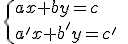

Resumen
Importante
Una ecuación lineal con dos incógnitas es una igualdad de la siguiente forma: ax + by = c, donde x e y son las incógnitas de la ecuación y a, b y c son números conocidos. Los valores a y b se llaman coeficientes y c se llama término independiente de la ecuación.
Por ejemplo, para la ecuación x + y = 40, se tiene que a = 1, b = 1 y c = 40.
Las soluciones de la ecuación son pares de números que al ser sustituidos en la ecuación por (x, y), hacen que ambos miembros valgan lo mismo (es decir, que se alcance el equilibrio).
Un sistema de dos ecuaciones lineales con dos incógnitas, como su propio nombre indica, está compuesto por dos ecuaciones lineales, es decir,

Resolver el sistema es encontrar una solución común de ambas ecuaciones. Por tanto, una solución del sistema es una pareja de valores (x, y) que cumple ambas ecuaciones de manera simultánea.
Importante
Para resolver analíticamente un sistema de dos ecuaciones con dos incógnitas utilizamos uno de los siguientes métodos:
Método de sustitución
Consiste en despejar la incógnita que elijamos de una de las ecuaciones y, posteriormente, sustituirla en la otra.
Método de igualación
Consiste en, elegida una misma incógnita para las dos ecuaciones, despejarla para, posteriormente, igualar las expresiones obtenidas.
Método de reducción
Consiste en obtener un sistema en el que los coeficientes de la incógnita x (o de la incógnita y) sean opuestos (con igual valor y distinto signo) para que, una vez sumadas ambas ecuaciones, podamos eliminar dicha incógnita. Para que esto ocurra, es necesario multiplicar una o ambas ecuaciones por los números adecuados.
Importante
El método de Gauss consiste en obtener sistemas equivalentes al que queremos resolver, cada vez más sencillos, hasta obtener uno muy simple con forma triangular.
El sistema que buscamos debe tener una única incógnita en su última ecuación, dos en la penúltima,..., y todas las incógnitas en la primera ecuación.
Las soluciones se obtienen, finalmente, resolviendo las ecuaciones desde la última ecuación hasta la primera. Esto es, resolvemos la última, sustituimos el valor obtenido en la penúltima y resolvemos, y así sucesivamente.